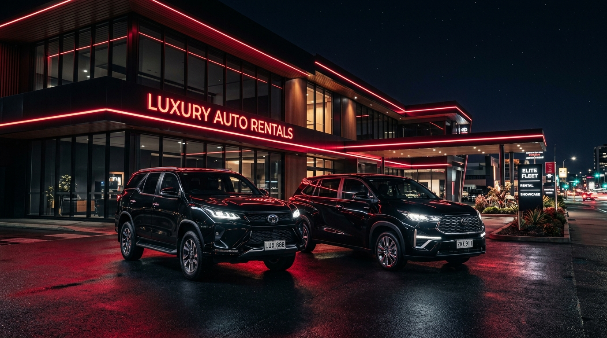
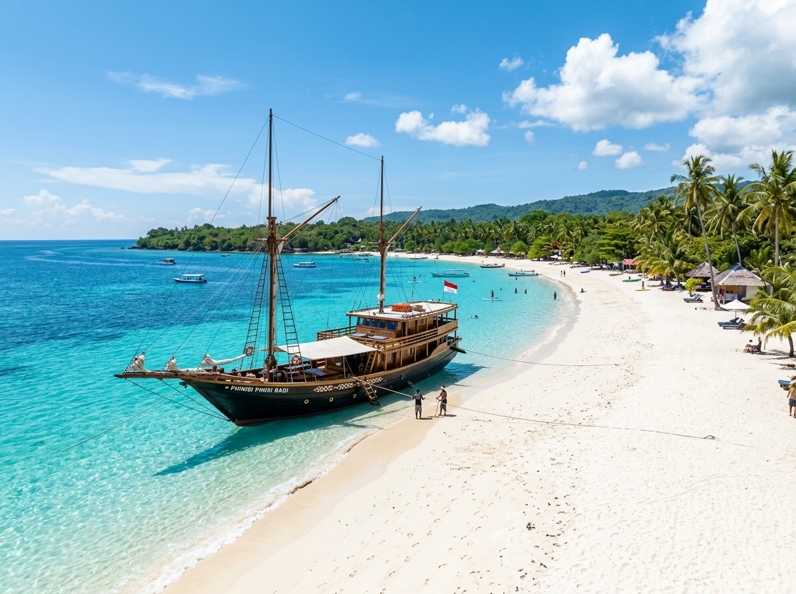
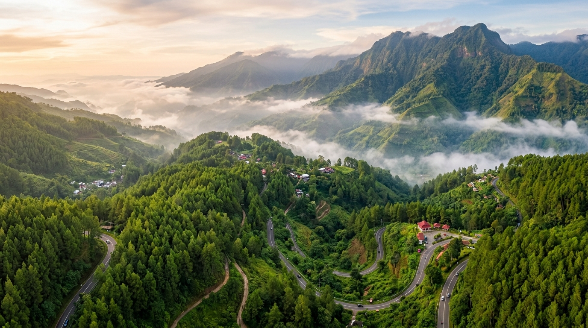

Sedia rental mobil lepas kunci & plus driver profesional. Melayani antar jemput Bandara Internasional Sultan Hasanuddin (UPG), kunjungan dinas, pernikahan, dan paket wisata Tana Toraja, Malino, & Tanjung Bira dengan armada terbaru dan harga transparan.
Antar jemput kapan pun di Bandara UPG
Unit baru, bersih, wangi & servis resmi
Ramah, berbusana rapi & paham rute
Jujur, terjangkau, tanpa biaya siluman
Setiap kendaraan dirawat secara berkala di bengkel resmi, AC dingin maksimal, interior wangi dan steril untuk kenyamanan perjalanan bisnis maupun liburan Anda di Sulawesi Selatan.
Kami menyediakan berbagai paket fleksibel sesuai dengan kebutuhan mobilitas Anda, mulai dari sewa harian hingga kontrak tahunan perusahaan.
Nikmati kebebasan dan privasi maksimal menjelajahi kota Makassar bersama keluarga atau rekan dengan syarat verifikasi cepat dan mudah.
Duduk santai tanpa khawatir macet atau lelah berkendara. Sopir kami ramah, sopan, berbusana rapi, dan menguasai seluruh jalanan di Sulawesi.
Layanan jemput dan drop-off on-time 24 jam di Bandara Sultan Hasanuddin Makassar. Driver siap menunggu di pintu kedatangan dengan name sign.
Solusi fleet rental untuk BUMN, instansi pemerintah, perusahaan swasta, dan kontraktor proyek pertambangan/energi di Sulawesi dengan invoice resmi.
Hadirkan momen terindah hari pernikahan atau penyambutan tamu kehormatan dengan armada mewah Toyota Alphard atau Fortuner bertabur dekorasi bunga elegan.
Kapasitas besar 11 hingga 15 kursi dengan Toyota HiAce Premio. Sangat pas untuk rombongan keluarga besar, gathering kantor, atau rombongan studi banding.
Jelajahi keajaiban alam dan budaya Sulawesi Selatan bersama armada nyaman Juragan 77. Driver lokal kami siap mengantar Anda ke setiap sudut destinasi terbaik.
Kunjungi rumah adat Tongkonan, ritual budaya Rambu Solo, makam tebing purba Lemo & Londa, serta hamparan sawah terindah di negeri di atas awan Batutumonga.

Pasir putih sehalus bedak & air biru kristal. Saksikan pembuatan kapal Phinisi legendaris di Tana Beru, tempat kelahiran kapal layar nusantara.
Karst terbesar kedua di dunia. Susuri sungai hijau zamrud di antara tebing-tebing batu kapur raksasa & temukan lukisan tangan prasejarah tertua di Leang-Leang.

Nikmati segarnya udara dataran tinggi, hutan pinus, kebun teh, air terjun Takapala, dan petik strawberry segar langsung dari kebunnya.
Fort Rotterdam, Trans Studio, Pantai Losari, Coto Gagak, Konro Karebosi & Ice Pisang Ijo — surga kuliner autentik Bugis-Makassar dalam satu hari penuh.
Terima kasih kepada seluruh pelanggan yang telah mempercayakan perjalanan bersama Juragan 77 Makassar. Berikut beberapa momen seru dari perjalanan mereka di Makassar, Toraja, Tanjung Bira, dan sekitarnya.
Kami mengutamakan keselamatan, kepastian waktu, dan keramahan khas Bugis-Makassar demi kepuasan setiap perjalanan Anda.
Seluruh armada kami merupakan unit tahun muda (2022-2025) dengan jadwal pemeliharaan ketat di bengkel resmi Astra dan authorized dealer.
Sebelum diserahkan kepada tamu, setiap unit mobil selalu dicuci bersih luar dalam, di-vacuum, dan disemprot disinfektan wangi premium.
Driver kami memiliki jam terbang tinggi, berpenampilan rapi, tidak merokok dalam mobil, serta menguasai jalur wisata dan alternatif di Sulawesi.
Lokasi kami hanya beberapa menit dari Bandara Internasional Sultan Hasanuddin. Begitu mendarat, mobil dan sopir sudah siap menunggu Anda.
Ketenangan perjalanan Anda terjamin 100%. Apabila terjadi kendala teknis tak terduga di jalan, kami segera menyediakan unit pengganti tanpa biaya tambahan.
Tanpa birokrasi berbelit. Verifikasi data sewa lepas kunci dapat dilakukan secara online melalui WhatsApp hanya dalam hitungan menit.
Pesan mobil sewa impian Anda dalam 4 langkah simpel tanpa ribet.
Tentukan tipe mobil yang sesuai dengan kebutuhan jumlah penumpang dan tujuan rute perjalanan Anda di Makassar.
Kirimkan tanggal pemakaian, durasi hari sewa, dan lokasi antar/jemput (Bandara Hasanuddin / Hotel).
Kirim foto KTP / SIM untuk verifikasi cepat dan lakukan booking fee (DP) agar jadwal armada terkunci aman.
Mobil bersih dan siap pakai akan diantar tepat waktu di bandara atau hotel. Selamat menikmati perjalanan Anda!
Kepercayaan dan senyum kepuasan ribuan pelanggan adalah motivasi terbesar kami untuk terus memberikan layanan rental mobil terbaik di Sulawesi Selatan.
"Layanan sewa Innova Zenix dari Juragan 77 sangat memuaskan! Mendarat di Bandara Hasanuddin jam 11 malam langsung dijemput dengan ramah. Mobil wangi banget, suspensi empuk, perjalanan ke Toraja jadi nyaman tanpa pegal."
"Sewa Fortuner lepas kunci untuk perjalanan keluarga ke Tanjung Bira. Syaratnya mudah dan cepat sekali diverifikasi via WhatsApp. Kondisi ban dan rem sangat prima saat melibas tanjakan. Pasti langganan kalau ke Makassar lagi!"
"Kami menyewa 2 unit HiAce Premio untuk rombongan delegasi kantor kementerian di Makassar. Driver sangat sopan, tahu jalan tembus menghindari macet, dan paham tempat makan Coto dan Konro terenak. Recommended 100%!"
Temukan jawaban cepat atas pertanyaan seputar ketentuan sewa mobil di Juragan 77 Makassar.
Untuk wisatawan/luar kota: Foto E-KTP, SIM A aktif, tiket pesawat PP ke Makassar, serta bukti reservasi hotel/penginapan. Untuk warga lokal Makassar: Foto E-KTP, SIM A, Kartu Keluarga (KK), dan jaminan sepeda motor + STNK asli saat serah terima unit.
Ya, tim Juragan 77 beroperasi 24 jam nonstop setiap hari! Kami siap mengantar atau menjemput mobil langsung di lobby kedatangan Bandara Internasional Sultan Hasanuddin Makassar (UPG) kapan pun pesawat Anda mendarat.
Bisa dan sangat diizinkan! Anda hanya perlu memberitahukan rute tujuan luar kota kepada admin CS saat awal pemesanan agar tim kami dapat memastikan kesiapan teknis armada untuk rute pegunungan atau jarak jauh.
Sewa harian dihitung per 24 jam untuk layanan Lepas Kunci, dihitung sejak jam serah terima kendaraan. Untuk sewa dengan driver, dihitung per hari kerja (maksimal hingga pukul 23:59 WITA per harinya).
Kami menerima pembayaran melalui transfer Bank BCA, Mandiri, BNI, BRI, QRIS, serta pembayaran tunai (cash) pada saat serah terima kendaraan di lokasi.
Terletak di jalan protokol utama Makassar, hanya 5 menit dari Bandara Internasional Sultan Hasanuddin (UPG). Siap antar jemput gratis ke bandara dan melayani perjalanan dinas serta wisata ke seluruh Sulawesi Selatan.
Jl. Perintis Kemerdekaan KM 18, Sudiang, Kec. Biringkanaya, Kota Makassar, Sulawesi Selatan (Akses Langsung Jalur Bandara UPG).